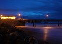

12/31/12 3:49 PM
12/31/12 3:49 PMModel: DMC-GF1
focalLength35mm: 30.0mm
meteringMode: Spot
isoEquivalent: 400
exposureTime: 15.0s
aperture: 20.0
Exposure Bias Value: 0 EV
Exposure Program: Manual control
White Balance: Auto white balance
flash: noFlash
resolution: 3078 x 2199
"> 12/10/12 7:40 AM
Model: E-M5
Focal Length: 28.0 mm
meteringMode: Multi-segment
isoEquivalent: 200
exposureTime: 1/250s
aperture: 10.0
Exposure Bias Value: -0.7 EV
Exposure Program: Program creative (slow program)
White Balance: Manual white balance
flash: noFlash
resolution: 3114 x 2224
"> 10/21/12 7:06 PM
Model: DMC-GF1
focalLength35mm: 41.0mm
meteringMode: Spot
isoEquivalent: 100
exposureTime: 60.0s
aperture: 10.0
Exposure Bias Value: 0 EV
Exposure Program: Manual control
White Balance: Manual white balance
flash: noFlash
resolution: 3740 x 2672
">


 7/20/14 8:32 PM
7/20/14 8:32 PMModel: DMC-GF1
Lens: OLYMPUS M.75mm F1.8
focalLength35mm: 150.0mm
meteringMode: Multi-segment
isoEquivalent: 160
exposureTime: 1/250s
Aperture Value: f/1.8
Exposure Bias Value: -33/100 EV
Exposure Program: Program normal
White Balance: Auto white balance
flash: noFlash
resolution: 3987 x 2848
">